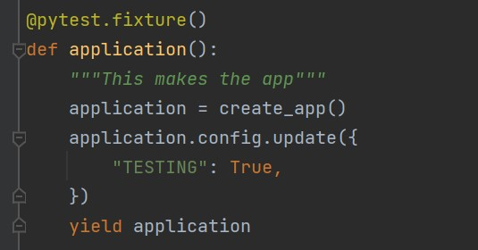
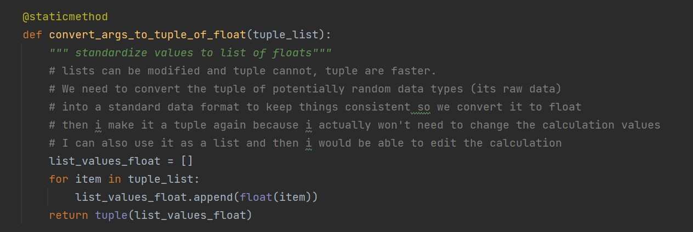

{% extends "base.html" %}
{% block content %}
Pylint & Others
Pylint
- Pylint is a tool that checks for errors in Python code, tries to enforce a coding standard and looks for code smells. It can also look for certain type errors, it can recommend suggestions about how particular blocks can be refactored and can offer you details about the code's complexity.
- Installation:
pip install pylint
- Verify the pylint installation:
pylint --version
Others
-
Pytest Fixtures are functions attached to the tests which run before the test function is executed. Fixtures are a set of resources that have to be set up before and cleaned up once the Selenium test automation execution is completed. We can tell pytest that a particular function is a fixture by decorating it with @pytest.fixture.

- Type hints is a feature of Python that allows you to explicitly declare the data type of a variable when declaring it. They are only available in Python 3.5 and later.
Type hints provide two benefits. First, they help people reading your code to know what types of data to expect. Second, they can be used by the Python interpreter to check your code for errors at runtime, saving you from some frustrating bugs.
name = "trang"
course = "is218"
- Python is considered a dynamically typed language, meaning that the types of variables need not be declared before use. This means that it is easier to code, but also means it is harder to catch errors in complex programs.
Example of dynamic declaration of a variable in python.
- Type Casting is the method to convert the variable data type into a certain data type in order to the operation required to be performed by users. In this article, we will see the various technique for typecasting. This example is casting list to tuple

-
Unittest is the first level of software testing where the smallest testable parts of a software are tested. This is used to validate that each unit of the software performs as designed.
Resource
{% endblock %}